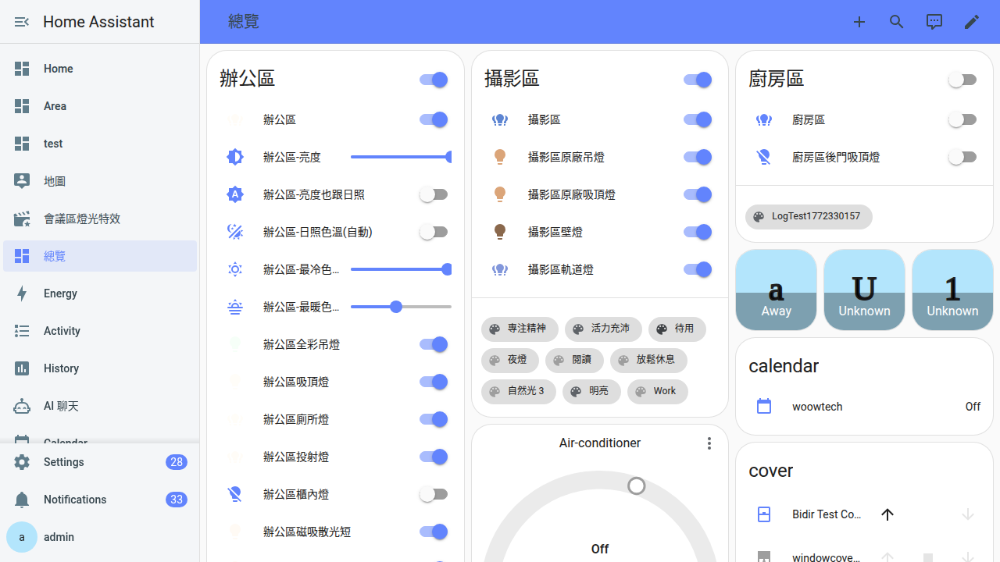

從側邊欄打開它
上一章你看到左邊冒出「Pi Agent」按鈕就知道裝好了。這章把那顆按鈕背後的三件事一次講完：為什麼它會自己出現、為什麼老婆帳號進 HA 卻看不到、為什麼手機打開 HA App 也能直接進去。看完你會知道整套 Pi Agent 其實是「借住」在 Home Assistant 裡，不用另外開任何埠。
為什麼要懂那顆按鈕
大部分人裝完 Pi Agent 就直接按下去用了，但接下來三件事幾乎每個家庭都會遇到：
- 「老婆的手機打不開，是不是壞了？」——沒壞。是刻意做成「只有管理員（Administrator）看得到」，因為 Pi Agent 會拿你的 API 金鑰去外面跟 AI 溝通，不是給訪客亂玩的功能。
- 「出門在外能不能連？」——能。因為 Pi Agent 沒有自己開一條網路進來，是「站在 Home Assistant 後面」，只要你原本 HA 能遠端連得回家（Nabu Casa、Cloudflare Tunnel、VPN 都算），Pi Agent 自動跟著通。
- 「要不要開防火牆？路由器要不要改？」——一個字都不用改。這章講的「HA Ingress」機制就是為了讓你不用碰路由器。
把這章看完，你以後跟家人解釋「為什麼你看不到、為什麼我出去也還連得回家」就有底了。
HA Ingress 是什麼？為什麼「零埠」這麼重要
大樓門房的比喻：想像 Home Assistant 是社區大樓的門房阿伯，任何住戶（也就是每一個 add-on）想被外人拜訪，都要「站在門房後面」，訪客先跟門房打招呼、門房確認過你是誰、才會把你帶進去找那個住戶。這就是 Home Assistant Ingress（入口代理）在做的事。
Pi Agent 也一樣。它裡面其實跑了一個網站（叫 pi-web），本來需要一個「網址＋埠號」才能開，例如 http://家裡IP:30142。但如果真的這樣做，你就得：
- 路由器開一條 port forwarding 給 30142
- 擔心密碼會不會被暴力破解
- 出門在外還要記自己家的 IP
- 手機 App 沒辦法自動跟著走
啟用 Ingress 之後，這四件事全部消失。你連 Home Assistant 就好，HA 幫你把畫面塞進側邊欄那個 iframe（內嵌框架）裡，登入、權限、遠端連線全部沿用 HA 那一套。
30142（config.yaml 的 ingress_port: 30142 明講），但你在瀏覽器網址列永遠看不到這個數字——你根本沒直接連它。實際上，每一個資源請求都被塞進 你的HA網址/api/hassio_ingress/<token>/… 這條 HA 核心（homeassistant/components/hassio/ingress.py）內建的路由，由 HA 內部轉發給 add-on 容器裡的 nginx（監聽 30142），nginx 再轉給 pi-web（Next.js，實際跑在容器內部 30141）。三層代理，你的瀏覽器看到的永遠只是 HA 的網址。| 比較項目 | Ingress 走法（Pi Agent 現況） | 傳統開埠走法（大部分自架服務） |
|---|---|---|
| 要不要改路由器 | 不用 | 要開一條 port forwarding |
| 要不要另外設密碼 | 不用，用 HA 帳號 | 要，且要自己防暴力破解 |
| 手機 App 能不能直接開 | 能，Companion App 內嵌 | 要另外裝瀏覽器、記 IP |
| 出門在外能不能連 | 能，跟著 HA 的遠端方案走 | 要另外弄 VPN 或 DDNS |
| 資安曝露面 | 只有 HA 這一個入口 | 多開一個埠，就多一個攻擊面 |
| 被誰看到 | 只有 HA 管理員（可設定） | 只要知道網址的人都看得到 |
admin 權限的意義（為什麼家人看不到）
Home Assistant 使用者分兩種（HA 官方的「用戶管理」章節有完整說明，不在本教材範圍）：
| 角色 | 能做什麼 | 側欄長什麼樣 |
|---|---|---|
| Administrator（管理員） | 設定齒輪全開、能裝／改／刪 add-on、能看所有 Pi Agent 的 Session | 會看到「Pi Agent」按鈕 |
| User（一般用戶） | 只能操作既有的儀表板、開關燈、看歷史 | 看不到「Pi Agent」按鈕 |
這是 Pi Agent 的 config.yaml 裡刻意寫了一行 panel_admin: true（就在 panel_title: Pi Agent 下面）——「這個側邊面板，只給管理員看」。實作面上，這對應 HA supervisor 端 IngressPanel 的 admin 旗標，再被 HA 核心的 frontend.async_register_built_in_panel(..., require_admin=data.admin, ...) 套用。為什麼要這樣？
- Pi Agent 會用你的 API 金鑰去打外面的 AI（GLM、OpenAI、Claude…），這些金鑰是要付費的，訪客亂玩會直接燒錢。
- Pi Agent 的 Session 對話會記錄你問過的家裡問題，可能夾雜設備 ID、屋內位置，屬於相對私密的資料。
- Pi Agent 的 Skills能真的執行 shell 指令、動 HA 設定，訪客如果玩壞了自動化，你要花整晚回復。

從側邊欄打開 Pi Agent
-
用管理員帳號登入 Home Assistant
電腦瀏覽器打開你家的 HA 網址（本地大多是
http://homeassistant.local:8123或http://家裡IP:8123），輸入你設好的管理員帳密。如果你只有一個帳號，那就是它。 -
看左邊側邊欄有沒有「Pi Agent」按鈕
側邊欄由上到下大概長這樣：概觀、地圖、記錄、歷史、開發者工具⋯⋯再往下捲會看到 add-on 掛出來的自訂面板。Pi Agent的按鈕圖示是一個機器人（
mdi:robot）。看到就代表 add-on 有正確啟動、Ingress 有掛好、你的帳號是管理員——三件事都對。提示：找不到的話往下看本章的常見卡關，八成是三件事其中一件沒對。 -
按下去，等 5～10 秒
右邊主區塊會出現 pi-web 的工作區（下一章會完整導覽）。第一次點通常會有 5～10 秒的載入時間，這是因為 HA Ingress 要先把請求轉到 add-on 容器裡的 nginx，nginx 再轉給 Next.js 網站首次啟動；之後再點就是秒開。
-
認一下頂端右上的「Open in new tab」按鈕
那顆按鈕是「把 Pi Agent 從 HA 的側邊欄拆出來、獨立開一個瀏覽器分頁」的入口。適合大螢幕、想同時把 HA 和 Pi Agent 並排看的情境。它跟側欄版是同一個 pi-web 實例，資料完全共通，只是外殼不一樣。
-
手機／平板：用 Home Assistant Companion App 打開
如果家裡手機已經裝了 HA 官方的 Companion App、登入的是管理員帳號，打開左上角的漢堡選單（三條線），側邊欄裡一樣會有「Pi Agent」。按下去就是完整的 pi-web 工作區，跟電腦上一樣的體驗，只是螢幕小一點——所以第一次建議還是電腦上先熟悉。
多裝置存取的三種情境
Pi Agent「借用」HA 連線的最大好處就是——只要 HA 開得起來，Pi Agent 就開得起來。實務上你會遇到三種情境：
| 情境 | 你做什麼 | Pi Agent 表現 |
|---|---|---|
| 家裡電腦（本地區網） | 瀏覽器打 http://homeassistant.local:8123 或家裡 IP |
秒進，載入最快，適合寫比較長的 prompt |
| 家裡手機／平板（本地區網） | 開 HA Companion App，或瀏覽器打同一組網址 | 一樣走 Ingress，一秒進；適合躺沙發、坐馬桶時問問題 |
| 外面（遠端） | 用你原本 HA 的遠端方案：Nabu Casa 的 xxx.ui.nabu.casa、你自己架的 Cloudflare Tunnel、WireGuard／Tailscale VPN⋯⋯ |
能連 HA 就能開 Pi Agent；速度取決於你家上傳頻寬和 AI 那端反應 |
「Open in new tab」跟側欄內嵌的差別
兩個看起來一樣，其實內裡不同。做個對照：
| 比較點 | 側欄內嵌（預設） | Open in new tab（獨立分頁） |
|---|---|---|
| 網址列長相 | /hassio/ingress/woow_ha_pi_agent（HA 監督器 frontend 的固定路徑） | /api/hassio_ingress/<一長串 16-128 字元 token>/…（HA createHassioSession 現場發的） |
| 登入怎麼過 | 沿用 HA 的登入 session（cookie） | token 本身就是「臨時通行證」，HA 每 60 秒會 validateHassioSession 續一次 |
| 重整之後 | 照樣運作（cookie 沒過期） | token 過期就 404，得回側欄重按新開一次 |
| 能不能複製網址給別人 | 不建議（別人沒登入你的 HA 也進不去） | 絕對不行（token 綁你這台瀏覽器） |
| 什麼時候用 | 日常主要模式 | 雙螢幕、想把 HA 和 Pi Agent 並排 |
家人也想玩：把家人升成管理員
另一半、小孩、爸媽如果也想用 Pi Agent，唯一乾淨的做法就是把他們的 HA 帳號設成管理員。步驟大致是「設定 → 人員 → 使用者 → 選那個人 → 打開『管理員』開關」。做完之後對方重登一次 HA 就會看到 Pi Agent 按鈕。
- 管理員不只看得到 Pi Agent，會同時看到全部 add-on、設定齒輪、開發者工具、備份頁、系統重啟按鈕⋯⋯所有能弄壞系統的東西都在裡面。
- 如果對方只是想「有時候幫忙下個指令」，其實可以你自己開 Pi Agent、把螢幕鏡到他手機（或用
Open in new tab產生分頁，當面給他看），不一定要真的升管理員。 - 小孩帳號不建議升管理員，寧可你當代理人。理由：改壞 HA 設定的復原成本比想像高。
常見卡關
-
側邊欄「沒有」Pi Agent 按鈕
照這個順序檢查：
① 你這個帳號是不是管理員？到「設定 → 人員 → 使用者」點自己名字，看「管理員」開關有沒有打開。老婆用的帳號通常是這裡卡住。
② 到「設定 → Add-ons → Woow HA Pi Agent → Info」分頁，看下面「顯示在側欄（Show in sidebar）」有沒有開。安裝流程正常會自動開；但如果你以前手動關過就要重新打開。
③ 按 Ctrl+Shift+R（Mac 是 Cmd+Shift+R）強制重新整理 HA 前端。 -
按下去右邊「一直空白」，轉圈圈半天
先等 10～15 秒，因為 pi-web 的 nginx 首次啟動比較慢。等超過 30 秒都還是白的，按 F12 打開瀏覽器 Network 或 Console 分頁看有沒有紅字。
如果一堆_next/…、/api/…是 404，通常是 nginx 的sub_filter或注入的</head>shim 沒把絕對路徑正確重寫成 ingress 前綴（DOCS.md「Troubleshooting」有詳細敘述），八成是 add-on 沒完全啟動——先看 Add-on 頁面Log分頁；不行就重啟 add-on。
如果是 403（有時會夾Untrusted API request字樣），先直接「Add-ons → Pi Agent → Restart」；還不行就照 DOCS 說的做ha core restart，因為 ingress token 是 add-on 啟動時 mint 的，有時 Supervisor 需要重新註冊 panel。 -
「Open in new tab」按下去顯示 404
那段 URL 裡的 token 已經過期了。回側欄按一次 Pi Agent，讓它重新拿一組新的 token，再從頂端按「Open in new tab」開新的分頁。舊分頁可以直接關掉，重整也救不回來（因為 token 過期了）。
-
Companion App 打不開，一片黑
Home Assistant Companion App（iOS 或 Android）版本要夠新，太舊的版本不支援把 add-on Ingress 塞進 App 內嵌。建議：App Store 或 Play 商店更新到最新版；如果還是不行，先在同一支手機的瀏覽器（Safari／Chrome）打 HA 網址試試看，能開就代表是 App 版本問題，不能開就代表是網路或帳號問題。
-
電腦本地能開、出門遠端卻連不進 HA（連 HA 本體都連不進）
這不是 Pi Agent 的問題，是你 HA 的遠端連線本身壞了。修 HA 那邊：Nabu Casa 有沒有續訂、Cloudflare Tunnel 的 cloudflared 有沒有掛掉、VPN 有沒有斷。修好 HA 遠端，Pi Agent 自動跟著通。
常見問題
一定要 admin 帳號嗎？我不想把家人全部升管理員。
panel_admin: true 把側欄面板限定給管理員，這是 add-on 本身在 config.yaml 寫死的，不是 HA 的一般權限選項。想繞開的話得改 add-on 本身的設定並重裝，不建議；正確做法是升那個要用的家人成管理員，或者你自己代打。我在電腦和手機同時打開，會不會互相打架？
用 iPad 開跟電腦有什麼差？
從外面連回家跑 pi-web 會不會很慢？
我在外面用 Nabu Casa 連回家，Pi Agent 打的 API 是不是也會繞 Nabu Casa？
可以把 Pi Agent 的網址設成瀏覽器書籤嗎？
/api/hassio_ingress/<一長串 token>/… 的網址——那段 token 是 HA 用 createHassioSession 現場發的、每次重啟或閒置久了就失效，存了也白搭。安全的做法是存 HA 首頁（例如 http://homeassistant.local:8123），從側邊欄點進 Pi Agent。想省一步的話，可以書籤 http://homeassistant.local:8123/hassio/ingress/woow_ha_pi_agent——這是 HA 監督器（Supervisor）frontend 給 add-on ingress 的固定路徑，slug woow_ha_pi_agent 就是 config.yaml 裡宣告的那個。開啟時 HA 會臨場拿新的 token 幫你補上，所以這條連結是「永久有效」的（前提是 add-on 沒被移除、你的帳號還是管理員）。